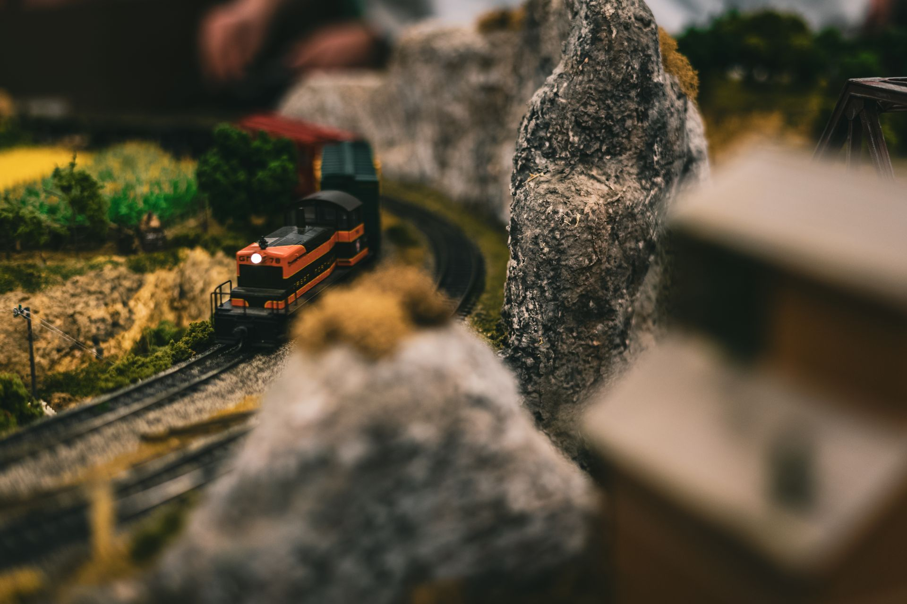

Réseaux miniatures en action
L'exposition phare du musée vous transporte dans un monde en miniature où locomotives et wagons sillonnent des paysages méticuleusement reconstitués. Du village de montagne à la gare de triage industrielle, chaque scène est pensée pour représenter fidèlement un fragment du Québec ferroviaire d'hier et d'aujourd'hui.
Une création collective
Ces réseaux sont l'œuvre de dizaines de bénévoles passionnés qui consacrent leurs fins de semaine à construire, peindre et animer ces décors. Chaque détail — une pancarte de gare, un camion de livraison garé sur le côté de la route, un paysan dans son champ — est soigneusement placé pour recréer l'illusion d'un monde vivant. Certains éléments sont fabriqués à la main, d'autres proviennent de collections personnelles de maquettistes.
Une technologie au service de la magie
Les trains en circulation utilisent des systèmes de contrôle numérique (DCC) qui permettent de faire rouler plusieurs locomotives simultanément sur le même réseau, chacune à sa propre vitesse et avec ses propres sons. Les feux de signalisation, les passages à niveau et les aiguillages sont automatisés, rendant le spectacle encore plus réaliste.
Pour tous les âges
Cette exposition est conçue pour être accessible à tous. Des tables à hauteur d'enfant permettent aux plus jeunes de voir les trains de près, tandis que les panneaux explicatifs offrent aux adultes des informations techniques et historiques sur les modèles présentés. Certains réseaux disposent même de commandes que les visiteurs peuvent actionner eux-mêmes pour faire circuler une locomotive.
Informations pratiques
- Durée recommandée
- 45 minutes à 1 heure
- Accessible aux personnes à mobilité réduite
- Oui
- Adapté aux enfants
- Dès 4 ans